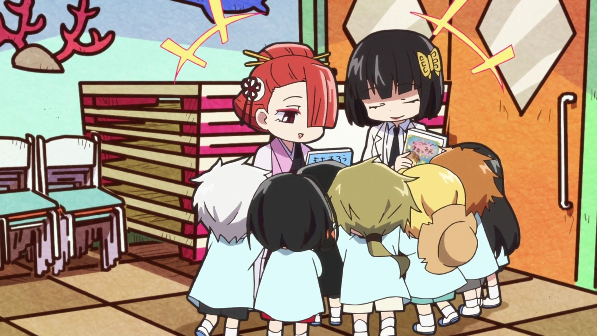
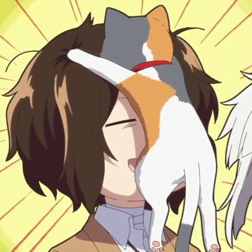
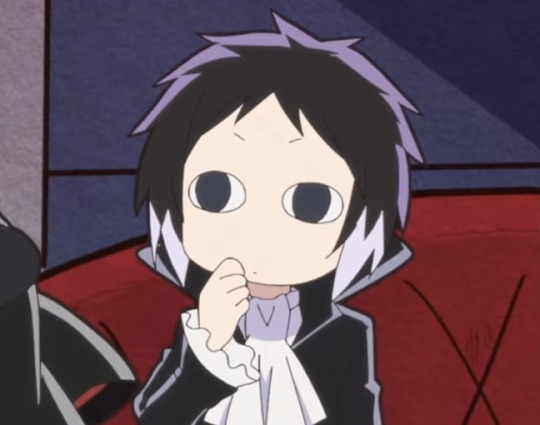

BUNGOU STRAY DOGS WAN
Bungou Stray Dogs WAN muestra el lado más divertido de los personajes de BSD con un estilo chibi bastante agradable
Es la adaptación al anime del manga creado por Neko Kanai basado en Bungou Stray Dogs
El anime fue producido por el estudio BONES en el año 2021
Episodios: 12
Estado: Emisión finalizada
Emitido: 13 de enero de 2021 al 31 de marzo de 2021
Estreno: Invierno 2021
Estudios: Bones , Nomad
Fuente: Manga
Géneros: Comedia , Recuentos de la Vida , Sobrenatural
Duración: 11 min. por episodio
Clasificación: PG-13 - Adolescentes de 13 años o más


